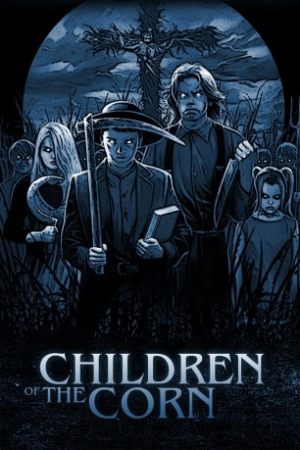

Country:United States, 92 minutes
Spoken languages:English
Genres:Horror, Thriller
Director(s):Fritz Kiersch
Writer(s):George Goldsmith
Video Codec:Unknown
Number: 2585


Certification:R
Storyline:
A boy preacher named Isaac goes to a town in Nebraska called Gatlin and gets all the children to murder every adult in town.
Cast:

Medium: Bluray,
Loaned: No
Aspect ratio: Unknown